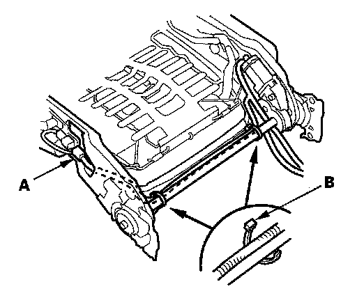
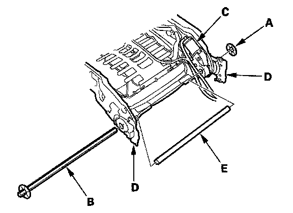
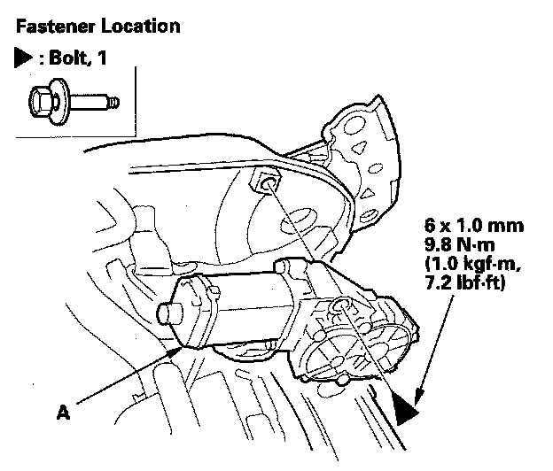

Power Seat Motor: Service and Repair
Front Seat Recline Motor ReplacementSRS components are located in this area. Review the SRS component locations and the precautions and procedures before doing repairs or service.
NOTE: Put on gloves to protect your hands.
1. Remove the front seat.
2. Remove these items:
- Seat-back cover
- Lumbar support motor cover

3. Driver's seat: Disconnect the lumbar support motor connector (A), and remove the wire ties (B).

4. Release the push nut (A) from the motor side end of the connecting rod (B), gently tap on the motor side of the connecting rod to remove it from the recline motor (C) and both recline adjusters (D).
5. Remove the rod cover (E).

6. Remove the bolt, then remove the recline motor (A).
7. Install the motor in the reverse order of removal, and note these items:
- Passenger's seat: Calibrate the ODS unit.
- Replace the wire ties you removed with new ones.
- Replace the push nut with a new one. Make sure the push nut is installed correctly.
- Apply medium strength type liquid thread lock to the mounting bolt before reinstallation.